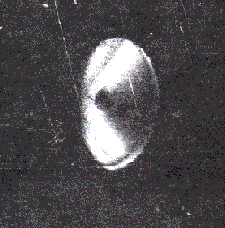

|  |
|
Fig. 1. Enlarged positive print of disc from original negative. |
viewed against a diffuse, glancing, reflecting light source. No stains were found at any place on frame 300, the frame on which the image of the disc was located.
Third. There are a number of long linear scratches (mostly on the non emulsion side) running parallel to the edge labelled with the Kodak Safety Film markings running east-west. It is apparent that the negative has received rough usage over the years. There are three very thin parallel scratches running through the image of the disc as well that are visible in Figure 1.
Fourth. The individual film grains were somewhat more apparent on this original negative throughout all three frames as compared with the second generation negative, as would be expected. They appeared to be randomly spaced and possessed random diameters as well.
Fifth. Our examination of the original negative confirms our initial speculation that the image of the disc is not the result of a double exposure, a reflection, a deliberate paste-up, or other kind of hoax.
Sixth. There appears to be a very interesting obliquely oriented micro- and macrostructure detail on the image of the object itself. Figure 2 is a drawing of the disc that indicates the location of this detail.